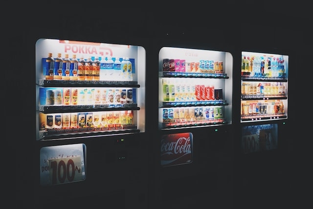
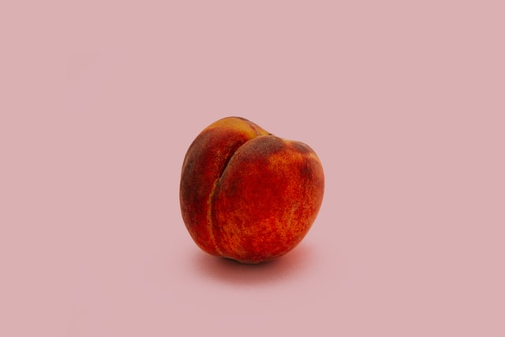
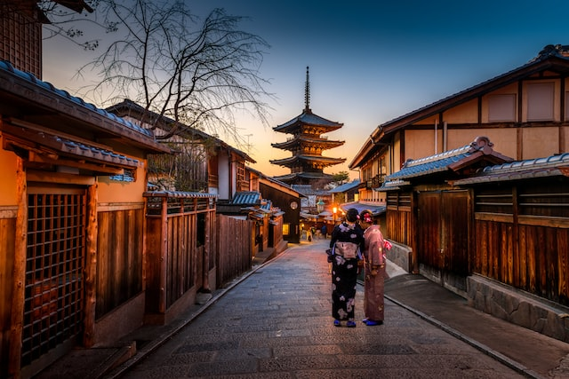

Japan Ranks 1st in the World in Six Surprising Matters
-
1.The number of Michlen restaurants
Among the world's cities, Tokyo leads the world in the number of Michelin-starred restaurants. The depth of Japan's culinary culture was a deciding factor, and it was this that led Michelin to choose Tokyo for its first foray into Asia.
-

2.Prevailing rate of vending machines
Japan has the world's highest penetration rate of vending machine based on population and land area. The reasons are said to be the high level of security and technology.
-

3.Deep sea volume
Around Japan, there are many areas with depths of more than 6,000 meters, with the deepest point in the Japan Trench at 8,058 meters and the deepest point in the Izu-Ogasawara Trench at 9,780 meters. The sea is said to be the widest in the world in terms of volume.
-

4.The sweetest peach
Few people know that the Masahime peach grown in Osaka, is registered in Guinness World Records as the sweetest peach in the world. The average sugar content of peaches is 11 to 13 degrees, but the Masahime's average sugar content is 22.2 degrees.
-

5.Number of long-run companies
There are over 30,000 companies in Japan that are still in business a century after their founding.The oldest one is Kongo Gumi, which was founded in the Asuka period (710-794) and has been involved in the construction of temples and shrines.
-
6.Hospital beds per population
According to statistics by the OECD, the number of hospital beds per 1,000 people is 13.0, the highest among the seven major countries. The number of hospitals is also the highest among OECD countries, with about 8,400, about 3,000 more than the U.S. in second place.